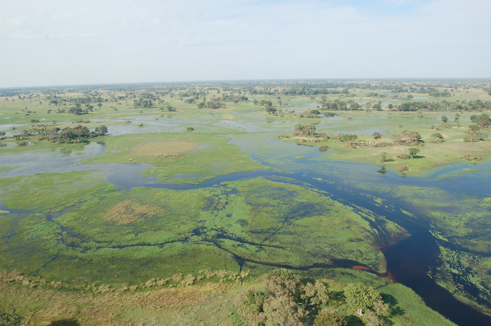
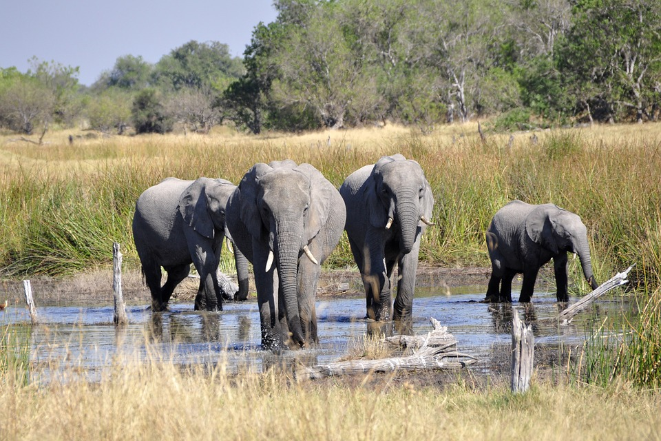
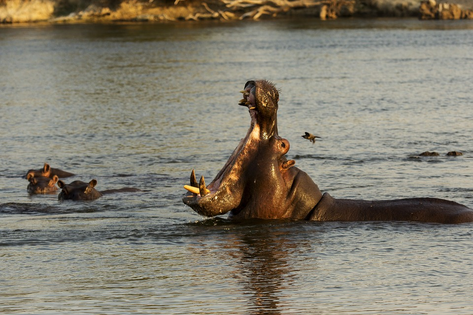
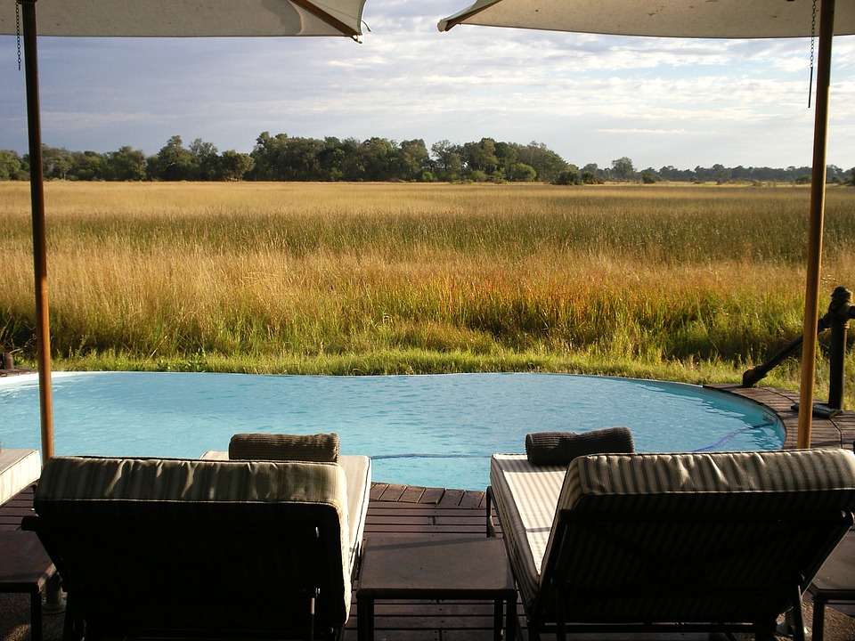

WWith it’s headwaters in the rainy and forested highlands of Angola, the Okavango River snakes its way southeast through the Caprivi Strip of Namibia and into Botswana. The Cuito and Cubango Rivers in the highlands of Angola are together what form the Okavango River and subsequently the Okavango Delta. The heaviest rains in the Angolan highlands occur in April - October. Because of the seasonality of the precipitation, the delta swells to life when the upstream flood waters arrive and shrinks when the dry season approaches. The permanent wetland area is about 1,200 sq miles and the seasonal wetland is about 3,000 sq miles. The water quality and quantity of the upstream rivers, which deliver about 2.5 trillion gallons of water each year, are essential for a sustained, biodiverse ecology that results in the delta. The Okavango Delta provides habitat for a rich array of wildlife, as well as supporting the approximately 600,000 people that live within the Okavango Basin catchment.
Among the large array of species living in the Okavango Delta are hippos, giraffes, elephants, crocodiles, wild dogs, warthogs, buffalo, lions, and zebras, migratory water birds, amphibians and reptiles. Elephants also transform the landscape by creating paths which become channels for water to flow. This dynamism is one of the many elements in which the physical system of the Okavango Delta and the biodiversity it supports and is supported by go hand in hand. Despite the private and public park reserves that are active in protecting this rich array of species, illegal poaching activities do occur and threatens species, whose habitat is already threatened with increasing water stress due to climatic variability and hydrologic infrastructure projects.
There are several parks and reserves, hundreds of acres in size, which provide areas set aside for habitat and conservation efforts. These parks draw a large amount of ecotourists as they provide safari and a “conservation experience”, which allows ecotourists to witness the array of species that inhabit the Okavango Delta. While these parks reserves generate awareness of extreme ecological significance of the delta and rich array of species as well generating monetary funds to sustain these efforts, the question arises of what the benefits of the ecotourism are in terms of supporting these conservation efforts as well the potential detriment of having such a burgeoning tourism industry in this fragile ecosystem.
With the upstream floodwater coming from Angola, pressure for Botswana and Namibia, as receivers of the upstream water, to maintain positive, working relationships with Angloa is critical. Additionally, with increasing established and proposed irrigation scheme projects, hydroelectric dams, pollution, and human demand and use of the water resources within the delta basin, the ecotourism industry brings in millions of dollar every year. As shown in this map scene and the snapshot below, there is an abundance of high-end lodges, as the industry calls them, or accommodations that house the thousands of tourists every year. While the ecotourism industry brings capital in to help support the parks and reserves, it also presents threats to sustainable water resources as well as habitat for endangered species.
